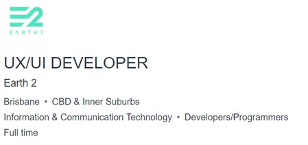

Personal information
Student Code: S3935418
Student Email: S3935418@student.rmit.edu.au
Greetings!
My name is Russell Saw and I am currently a student studying a Bachelor of IT in RMIT. I am Malaysian-Chinese by decent but have spent most of my childhood growing up in Melbourne (migrated at the end of 04) – and thus have adopted a strong Australian culture – with some Asian roots. While almost exclusively speaking English with friends and family, I can understand slight amounts of Cantonese and Chinese – something I’d love to expand by understanding on.
My past education consists of a finished VCE (Highvale Secondary), 4 years of undergrad experience (Design at melbuni / IT at monash) and now finally finishing a Bachelor of IT at RMIT.
If not seen at my desk job as a junior front-end developer or studying for my degree, you can catch me practising guitar or playing badminton. Videogames have, and always been, a huge part of my life. Sinking ungodly hours into gradually increasing an otherwise ineffectual number that supposedly quantifies your overall skill and competency - dota2 anyone?
Interest in IT
From an early age, IT has always been a major component of my life. Everything from playing video game consoles, the exchange of information through social medias, to my ever-growing curiosity of AI have shaped me to become the individual I am. My early childhood affinity with computer games had led me to become inevitably attached to PC’s. As you grow up with constantly updated hardware – and ever-increasing capabilities, your curiosity of what is possible, and what can be created with these machines stands as a driving factor for my pursuit in a career in IT. Whether these limits are explored through means as a software developer, security architect or even a path in data analytics, is yet to be realised. My hopes in completing my course in RMIT, is that I will learn in which of these fields my passion in IT lies. I currently have hands-on experience with IT, recently starting my job as a junior web developer, working within a dev team collaboratively to code the front-end of an e-commerce website to be used commercially.
The choice to finish my degree in RMIT lies more in the education culture, and how the university motivates students in their pursuit of knowledge rather than any specific class/ unit / professor. I believe in this day in age, course related knowledge (learning how to code for e.g.) is so accessible online that the job of my university is not to only instil knowledge, but create a motivating environment led by enthusiastic leaders to help students discover where their passion lies within their field – and therefore I chose RMIT.
Ideal Job

An opportunity to work as an UX Designer for something as contemporary and conceptual as a metaverse developer would be the sort of career I would be chasing. The job requires an experienced developer - ideally intrigued and versed in the metaverse concept to design user interfaces which will be accessed by millions in a virtual environment.
The concept of the metaverse presented as a virtual clone of our real planet – with 1:1 scaling is just so absurdly interesting that working within development for a project such as this will provide a deep fulfilment and daily thought-provoking challenges not seen in other developments. Earth2 is essentially a multiplayer game that allows players to buy and trade land. My prior fondness for video games – and interest in design makes me a great fit for a position like this. This opportunity will allow me to exemplify and grow my design orientated skills, while within an interesting IT scope.
The position requires a developer with 5 years’ experience with key knowledge in UX strategy and UI design, Web development, strong communication skills and at least a minimum tertiary qualification. Emphasis is put on the need for extremely strong design skills – being able to fit within the style of the project – while creating something novel, exciting, and obviously aesthetic. Design experience within multiple platforms and technologies is required (web, mobile, tablet) with a user centred approach. Experience in dealing with clients, marketing teams, UX researchers and digital product owners - and being able to represent concepts and mock-ups to these parties using effective visual representation is also a must.
In a technical sense, the position requires competency in HTML, CSS, JS, TS for web dev– and likely knowledge in modern frameworks (Angular, React for JS for e.g.).
To mock-up and develop UI elements, experience in design applications such as Adobe CC Libraries (Illustrator, Photoshop, XD) or other equivalents is needed.
An overall sound knowledge of design elements and principles, user-centred design partnered with strong communication and organisational skills to lead a potential team is also necessary.
My own skills and qualifications are somewhat related and begin to explore what is required for this ideal job. I am currently finishing my Bachelor of IT as my tertiary education. In terms of coding ability, I understand the fundamental principles of how some coding languages work, including HTML, CSS, JS and TS. I have had real-world experience applying these languages in developing websites. I have also had experience in completing courses in mobile app development (Android studio) which include development in the front and back-end (storing data using MongoDB SQL).
In terms of field experience, there is limited and junior experience as a developer, using libraries such as angular and RxJS to develop. As I work in the front-end, I am always considering the UX and using a user-centred approach to my designs. I have had prior tertiary experience in a Bachelor of Design, drawing upon design elements and principles learnt in my time learning architecture – which are all transferable skills which can be applied to digital UI design. Personally, I have always had an eye for design, constantly finding the imperfections in current everyday applications and services – thinking about the “what ifs?” and the reimagining in my own style.
What I require to be able to be qualified for this job mostly involves acquiring a deeper understanding of all the skills I have begun to develop as well as years of experience in the field. Although undertaking the appropriate units in an undergraduate course will equip me with the basic skills in these technical components – it is not until practised in a real-world environment in different contexts are these fields mastered.
Having multiple years of work experience within a web development team in the front-end is something to pursue that will teach good professional practise – along with a greater mastery over the coding skills that were above-mentioned. Optimally structured code, complex and efficiently written is something that can be picked up from senior developers working within the same dev team. My intention is to continue working within my current dev team to absorb these skills – with the option to move into another role in the years to come to expose myself to different work environments and styles. I need to specifically find another UX related opportunity that is focussed more on the modern aesthetic and human centred approach – ideally video-game or mobile app related.
Taking additional UX / UI Design courses to brush up and further develop my design related skills will likely be required. RMIT have an online UX/ UI Design course that I will be interested in completing in the future.
Personality Profile
Myer-Briggs Test
 The results of the Myer-Briggs test indicate that I have a debater (ENTP) type personality. This means that according to the test, my personality suggests that I am a creative thinker, with high confidence in social situations that is not afraid to explore and present novel and sometimes controversial ideas. Debaters, an analyst personality type, thirst for knowledge by questioning current beliefs – and picking apart arguments from multiples angles and perspectives – what the 16personalities website calls “the ultimate devil’s advocate”.
The results of the Myer-Briggs test indicate that I have a debater (ENTP) type personality. This means that according to the test, my personality suggests that I am a creative thinker, with high confidence in social situations that is not afraid to explore and present novel and sometimes controversial ideas. Debaters, an analyst personality type, thirst for knowledge by questioning current beliefs – and picking apart arguments from multiples angles and perspectives – what the 16personalities website calls “the ultimate devil’s advocate”.
The debater is a personality that I strongly identify with, as I am a creative thinker that enjoys the mental gymnastics that comes with dabbling in hypotheticals. I find myself – like stated in the test results, being brutally honest with my opinions in relation to ideas, emotions, and decision-making. I am certainly not afraid to express my thoughts, void of any fear of judgement from whomever I am communicating with. The test results only solidify what I have come to learn about myself and provide an even clearer picture of the type of career path I may choose to lead. I will be looking for a creative role, where the freedom to explore different solutions will best utilize my talents.
Within a team environment, these results mean that the debater type typically will look out to avoid a strictly hierarchal work environment. My expectation is that ideas and solutions within a team should be freely shared amongst each other and carefully considered regardless of your position within a certain work hierarchy. That is, I do not enjoy an extremely restrictive environment – requiring some extra “leash” to find my own solution when completing a certain task. The debater is more suited to adopt a managerial role – finding innovative methods to tackle problems – but what they lack is the patience or drive to implement them, avoiding the tedium of routine and monotonous work whenever possible.
In regards in team creation, the ideal would be a collaborative environment where the responsibility of birthing and implementing a solution lies in the team. The ideal would include a team of individuals that are not afraid to discuss and objectively assess situations – where thoughts and opinions are always welcome. The other team members will need to be able to take criticism when necessary – so long as it is logical and in the spirit of solely increasing performance. A challenge debaters face is when they are tasked with implementing the plans set out by others. That feeling of just being a “cog in a machine”, carrying out mundane tasks unimaginatively is something that debaters stray away from – and can lead to problems when grunt work within a team needs to be completed. In a sense – being in a managerial/leader position within a team environment is where the debater will shine.
I will mention that although the test results seem to describe myself quite well, not all the traits mentioned within the personality report seem to hold true (such as difficulty in focussing or being intolerant). It is also quite easy to believe some of the things mentioned based on what I previously believed to be true about myself – sort of like a confirmation bias (the report mentions being charismatic, but truly I may not be as novel and charming as I may think I am).
VARK Learning Styles Test
The VARK Leaning style test indicated that I have a multi-modal learning preference. That is, I may have different preferences when placed in unique learning contexts. The results showed an almost equal score in the 4 preferences (Visual, Aural, Read/Write and Kinaesthetic learning strategies). This means that I may have an adaptive learning strategy that can be switched based on what I may think is the most effective method of learning. For example, I may use visual strategies like graphs, diagrams and plans when learning about creative UI design implementation – but may use aural strategies such as questioning and recalling when trying to remember the theory behind such UI design practises. Learning something using multi-modal strategies may also help me understand something in a more complete sense (taking notes while watching AND listening to a video tutorial encompasses 3 different learning strategies).
Being multimodal – which most people categorise into, means that you can receive and impart information based on the learning strengths of others more efficiently. Within a team environment, this is especially useful as effective communication is the backbone of any successful team. I will be able to present information in different forms based on what I believe is the best way to interpret said info. Being flexible in this way means that you are more comfortable in different team contexts and with a broader diversity of team members of their own learning styles. This is will only influence me (and other team members) to feel less restricted in how and what we can present and communicate to each other.
Creating a team should be an easier process as the adaptable nature of muti-modal learners means they can fit into different teams. They can be placed in positions where they are required to use their multi-modal abilities to excel in their job (UX designers specifically need to consider in all the ways users perceive the information). Multimodal learners may be ideally placed into teams where language can be a barrier – whereby other methods of teaching (e.g., visually with graphs and diagrams) may be better suited for communication.
Although, the test results indicate a multi-modal learning style, the results (and test) are quite general without much sophisticated justifications as to WHY I am multi-modal. Without the support of other learning style tests, the results from this VARK test should be taken with a grain of salt – as I believe that I learn significantly better visually and aurally.
Truity Big 5 Personalities Assessment
 This personality assessment measures yourself in 5 different personality traits. The results from this showed that I scored higher in the ‘Openness’ and ‘Extraversion’ dimensions, average for ‘Agreeableness’ and ‘Conscientiousness’ and below average for ‘Neuroticism’. My tendency to think in creative and abstract ways is only substantiated by these test results, further suggesting I enjoy toying with adventurous ideas and discovering novel experiences (This aligns with the debater personality). The extraversion trait proposes that I tend to engage actively with others to seek social rewards such as friendship, admiration, and status. This result also aligns with my prior thoughts about myself, in terms of being an extraverted person. One other dimension that scored a slightly higher than average indication was the ‘Agreeableness’ trait. This describes a person of higher empathy, taking pleasure in cooperation and enjoy putting the needs of others before their own. In wholeness, the assessment identifies me as an empathic idealist, using my unique thinking style of abstract thoughts to solve problems and help others.
This personality assessment measures yourself in 5 different personality traits. The results from this showed that I scored higher in the ‘Openness’ and ‘Extraversion’ dimensions, average for ‘Agreeableness’ and ‘Conscientiousness’ and below average for ‘Neuroticism’. My tendency to think in creative and abstract ways is only substantiated by these test results, further suggesting I enjoy toying with adventurous ideas and discovering novel experiences (This aligns with the debater personality). The extraversion trait proposes that I tend to engage actively with others to seek social rewards such as friendship, admiration, and status. This result also aligns with my prior thoughts about myself, in terms of being an extraverted person. One other dimension that scored a slightly higher than average indication was the ‘Agreeableness’ trait. This describes a person of higher empathy, taking pleasure in cooperation and enjoy putting the needs of others before their own. In wholeness, the assessment identifies me as an empathic idealist, using my unique thinking style of abstract thoughts to solve problems and help others.
 The assessment suggests that I may be rather cooperative within a team setting, happy to complete tasks for others. This paired with my other psychometric results indicate that I may have a strong ability to understand and communicate effectively with a wider range of team members each having their own distinctive views. My extraverted tendencies and openness may provide positive direction within a team environment, bringing assertiveness and energy whilst constantly pushing for social interaction and shared ideas.
The assessment suggests that I may be rather cooperative within a team setting, happy to complete tasks for others. This paired with my other psychometric results indicate that I may have a strong ability to understand and communicate effectively with a wider range of team members each having their own distinctive views. My extraverted tendencies and openness may provide positive direction within a team environment, bringing assertiveness and energy whilst constantly pushing for social interaction and shared ideas.
When considering a team, a group of people that are vocal with their ideas and happy to consult one another may provide a better environment that plays out towards my strengths as an individual. The openness trait means that within a team, I am happy to take in the ideas of others. I may be able to be grouped with more introverted team members to bring out their thoughts without the fear of repercussion. The results from this test do align well with the other test results, all suggesting a creative style thinker – with extraverted and adaptive traits.
LinkUp (Personal IT Project)
Introducing LinkUp!
LinkUp is a desktop and mobile application / platform that allows gamers to find other like-minded players to team up with in-game. Specializing in the most popular e-sports, you will be able to match and find others of similar skill, time-availability, and personality. Whether you are a new team looking for talent, or a casual player seeking new friends, the platform will enable players to find teammates they will be comfortable playing with. Saving time matchmaking means that we can all spend more time playing the games we love, while having more fun with the players we choose to share it with.
These days competitive matchmaking is hosted by automated algorithm-based matchmaking services which pair players on nothing but their skill level. In what is an abusable system, players constantly find themselves in poorer quality matches - struggling with toxic teammates, massive skill discrepancies, players who abandon matches and “smurfs” (highly skilled players who play at a much lower rank). One needs to only scour game reviews or reddit pages of any game with online matchmaking to find that the number one complaint is always surrounding matchmaking. A study from the Anti-Defamation League showed that a massive 81% of all multiplayer gamers surveyed had reported a form harassment online, with 64% of the population reporting that the toxicity had mentally impacted them. Part of the solution lies in being able to form teams with players that you can verify to be genuine, to ensure a fun and cooperative environment. Recall the number of times you have matched with a toxic teammate that hurls abuse and destroys team cooperation, only to have you wishing the match would end now.
The ability to talk with your teammates before committing to a match– which you have chosen based on similar skill level and personality traits, reduces the chance of receiving unwanted teammates and vastly increases the quality of matches. On top of this, being able to find players with similar schedules will allow you to build a party with consistency and create genuine connections with new friends!
Application Features
The application will allow players to create their own user profile – which will be viewed by other players to evaluate and send party requests. Information such as age, games played, relevant skill levels and custom descriptions options will be available alongside basic information (username, profile picture, location). An option to include time availabilities may also aid players to find teammates with suitable schedules.
There will be a messaging system implemented to allow players to communicate, with links (and third-party implementation) to other gaming related media platforms for greater levels of communication (discord / twitch).
Exclusive to this platform, there will be a ‘Find Now’ feature for each different game title. This will randomly pair you with other players that are also looking for players in real time. A party is created placing all matched players in a ‘pre-lobby’ where teammates can mingle and create sort of a team chemistry – players can decide if the team is right for them. This matchmaking on the platform will take into consideration matchmaking filters set by users to create the best potential matches. Game specific filters will be available for selection, such as: roles, game-modes and whether they want to play multiple matches. If players are unhappy with the team they are paired with, a find new party option is available. The open position can then be filled with another player.
Players will be able to be upvoted or downvoted by other teammates which correlates into each user’s behaviour score. This score can then be used to pair players together to achieve the best overall parties. Instead of just pairing well behaved players with each other, LinkUp will try to create parties that take into consideration the average of the players behaviour scores combined. The idea here is that by mixing higher scored players and lower, it may create a greater positive experience for everyone – rather than having a team of just low scores or vice versa.
Third-party integration into another VoIP application such as Discord is a major quality of life feature that can help connect teams faster. For example, once players are happy with their party – a join discord link will be available to add all players into a voice-chat.
A team management section of the application with its own group chat, scheduling and role allocation features can be used for establishing groups of players looking to create a more permanent team.
The platform will be hosted via mobile or desktop application. An auto-start overlay mode on desktop versions can be enabled for ease of access – for those who choose to use Linkup often.
Development / Technical Requirements
LinkUp will need to be coded to use multiple platforms. An iOS or android device or PC will be needed to run the software.
A Physical server running an OS like FreeBSD will contain a DBMS like SQL/MySQL and will be necessary to store user information and logs. Another option would be to use an open-source library to build the backend such as Parse or Firebase (to store and receive data). Features such as instant messaging can use the XMPP.
Software such as a code editor to build the application on a cross-platform dev tool such as React Native. Using react will require other development software such as Android studio and/or XCode.
Skills Required
Extensive coding skills and familiarity in cross-platform development is needed to write up this application. Knowledge of backend development – server side logic and API creation will be needed too.
The dev team will need a front-end developer to create the UI, needing creative skills – knowledge of user centred design and general design principles.
The only special hardware required (other than hardware to build the application on) would be a suffice rack / tower server to manage the backend operations.
In terms of project feasibility, the skills and hardware required to develop such an application is easy to find. All the software required is open source or will require licensing – easily obtainable online. The developers do not need to be overqualified to be able to develop a project of this complexity. There will be free lancing developers capable of managing this project.
Imperative to the functionality of this application, a large user base is obviously required. A product marketer to promote and campaign for the application is needed.
Outcome
The outcome of a successful implementation of this project will see a boost in quality of matches within the competitive video games targeted. Players will create meaningful connections with other like-minded people, creating better team environments and reducing the standard toxic environment bred by competitive gameplay.
The success of such an application will hopefully serve as a benchmark to multiplayer matchmaking, showing the positive nature of players when reminded that their teammates are real humans, like themselves. The hopes are that it will have a lasting impact on gaming communities, a household application that players look to use as their first option in connecting with other players.